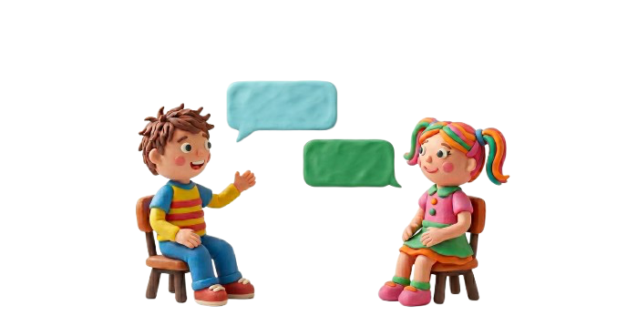
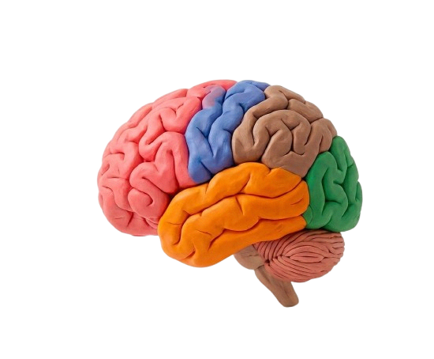
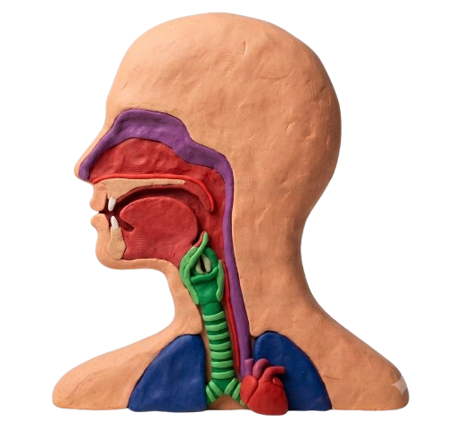

Comunicación
Comunicación
Proceso en el que un emisor traspasa un mensaje que debe ser interpretado por un receptor.
Les damos la bienvenida a este espacio creado por dos estudiantes de Pedagogía en Educación Diferencial, Espe y Yas. Este sitio web fue diseñado con el propósito de apoyar a quienes están cursando carreras de pedagogía. Nuestro objetivo es informar y ofrecer ejemplos prácticos sobre los distintos niveles del lenguaje. Esperamos que este contenido les sea de utilidad para desarrollar actividades y planificaciones para sus futuras clases.
Te invitamos a ver esta breve presentación sobre los niveles del lenguaje y el propósito de nuestro sitio web.
Si es tu primera vez aquí o no estás familiarizado con la pedagogía y el lenguaje, ¡no te preocupes! Esta pequeña ruta te guiará paso a paso:
Antes de empezar, aprende la diferencia entre comunicación, lenguaje, lengua y habla. ¡Son los cimientos del tema!
Ver Conceptos ↓Se enfoca en los sonidos del habla. Aprende cómo los niños identifican y segmentan sílabas con juegos interactivos.
Explorar Sonidos ↗Se enfoca en la estructura y gramática. Cómo armar oraciones y usar artículos (género/número) con 3 juegos dinámicos.
Explorar Gramática ↗Se enfoca en el vocabulario y significados. Aprende palabras polisémicas y categorización semántica con divertidas demos.
Explorar Vocabulario ↗Se enfoca en el uso social del lenguaje. Reglas de conversación, turnos y reconocimiento de quiebres con un juego interactivo.
Explorar Pragmática ↗
Proceso en el que un emisor traspasa un mensaje que debe ser interpretado por un receptor.

Habilidad cognitiva del ser humano que permite expresar ideas, emociones y sentimientos.
Idioma o sistema de signos que permite comunicarnos según el contexto en que vivimos.

Acto motor que incluye tono de voz, articulación, respiración y otras funciones para comunicarse.
Son distintas fases que se adquieren en una etapa temprana de la vida, se adquieren durante la etapa lingüística del desarrollo, mejor dicho cuando los niños empiezan a hablar. Todas las fases son elementos importantes para el desarrollo lingüístico del niño, ya que estas otorgan habilidades necesarias para que el habla se genere y que esta sea efectiva y comprensible.
Este nivel tiene relación con los sonidos, es decir, se encarga de que el niño logre escuchar, reconocer y utilizar los sonidos para formar palabras en base a su idioma. Lo fonético hace referencia a características físicas para lograr una representación mental de un sonido en específico.
El nivel fonológico corresponde al área del lenguaje que se relaciona con los sonidos del habla, se encarga de lograr identificar y producir los distintos sonidos que forman las palabras.
Es el nivel en donde los niños aprenden a formular y ordenar oraciones correctas y aprenden a conjugar las palabras apropiadamente, organizándolas de manera que sus ideas tengan sentido. Es decir, funciona como la gramática; el nivel morfosintáctico es el que nos permite identificar cuándo usar "él" o "ella" en alguna conversación, y cómo modificar las palabras cuando hablamos de algo en plural.
Se relaciona con el vocabulario y el significado de las palabras dentro de una oración. Permite comprender que una misma palabra puede tener distintos significados según el contexto en el que se utilice y reconocer cambios en las palabras según su forma o cantidad. Por ejemplo, entender que "rico" puede referirse a algo sabroso o a alguien con mucho dinero, o que "lápiz" y "lápices" nombran el mismo objeto pero en singular y plural.
Se refiere a la adquisición y uso adecuado del lenguaje en contextos sociales. Involucra la intención comunicativa, esto quiere decir la información que queremos otorgar o comunicar; también incluye el respetar ciertas normas para una conversación.